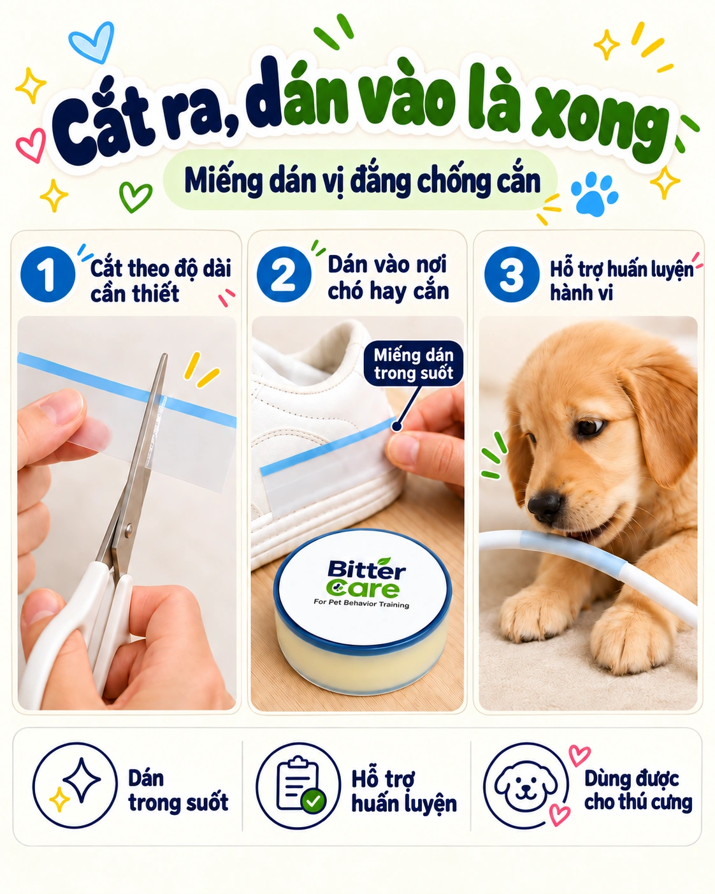

Lịch sử nghiên cứu lâu dài
Nhà sản xuất nguyên liệu kế thừa hơn hai thế kỷ phát triển khoa học.
Chăm sóc những nơi cún hay cắn. Tìm hiểu nguyên lý và cách sử dụng BitterCare trong nhà.


BitterCare là miếng dán hỗ trợ quản lý hành vi, tạo vị đắng trên bề mặt đồ dùng mà cún thường ngậm hoặc cắn. Dán trực tiếp vào vị trí cần bảo vệ thay vì xịt trên diện rộng. Sử dụng nguyên liệu tạo vị đắng cao cấp từ Anh.
 Macfarlan Smith · Veranova UK
Macfarlan Smith · Veranova UK
Chúng tôi sử dụng nguyên liệu tạo vị đắng cao cấp từ Veranova tại Anh, tiếp nối di sản khoa học của Macfarlan Smith.
Nhà sản xuất nguyên liệu kế thừa hơn hai thế kỷ phát triển khoa học.
Chăm sóc bắt đầu từ nguồn gốc thành phần tạo vị đắng denatonium benzoate.
Cân nhắc đặc tính nguyên liệu tạo vị đắng cùng điều kiện sử dụng sản phẩm.
Tạo phản ứng với vị đắng trên bề mặt hay bị cắn, kết hợp đồ nhai phù hợp và quan sát thường xuyên.
Kinh nghiệm kết hợp nguyên liệu tạo vị đắng cao cấp với mực gốc dầu đậu nành là nền tảng để phát triển nhiều phương pháp in và phủ khác nhau.
Xuất xứ Anh nói về nguyên liệu tạo vị đắng. Mực gốc dầu đậu nành là nền tảng phát triển BitterINK, không có nghĩa mọi lớp phủ của miếng dán này đều gốc dầu đậu nành. Phản ứng tùy từng chú chó.
Lần đầu sử dụng hay còn băn khoăn về phản ứng của cún? Hãy tìm câu trả lời tại đây.

Tìm hiểu cách cắt, dán và quan sát cùng các mẹo thực tế.
Nơi nên dùng, nơi cần tránh và những điều cần kiểm tra trước.

Giải đáp về phản ứng khác nhau, thay miếng dán, dây điện và cách bóc.

Tìm hiểu các nguyên nhân như khám phá, thói quen, năng lượng và căng thẳng.
Một công cụ hỗ trợ xác định đúng vị trí và quan sát phản ứng, dễ sử dụng trong sinh hoạt hằng ngày.
Xác định phần đồ nội thất, khung cửa hoặc dây điện mà miệng cún thực sự chạm vào.
Cắt rộng hơn một chút so với vùng cún hay cắn.
Lau sạch, để khô hoàn toàn rồi dán chắc vào đúng điểm tiếp xúc.
Theo dõi trong vài ngày đầu; điều chỉnh vị trí hoặc thay miếng dán khi cần.
Khám phá tính cách miễn phí. Sản phẩm được bán riêng; kết quả chỉ mang tính tham khảo để hiểu hành vi.
Bạn có câu hỏi về vị trí dán hoặc sản phẩm? Hãy mô tả tình huống, chúng tôi sẽ xem xét và trả lời qua email.